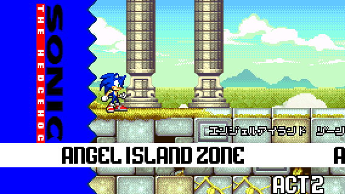
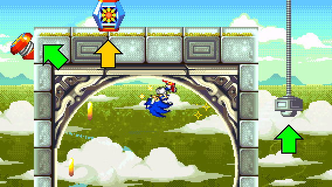
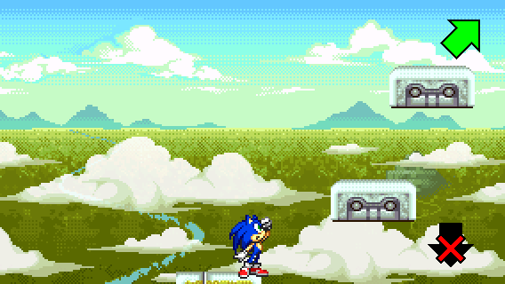
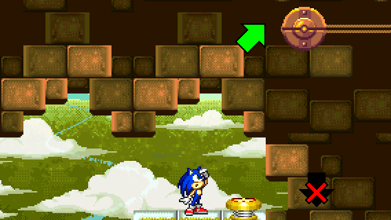
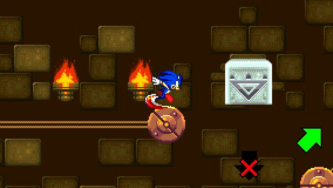
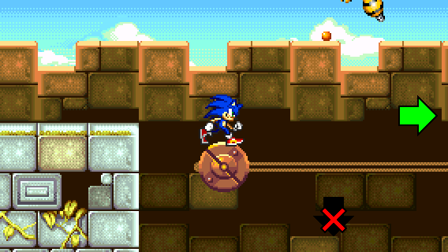
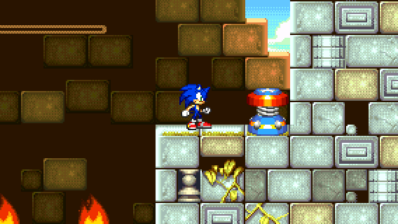
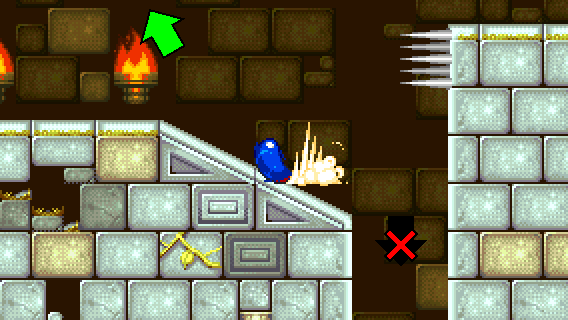

Location: Angel Island Zone Act 2
Difficulty: Moderate


Location: Angel Island Zone Act 2
Difficulty: Moderate

STEP 1:
After the first loop, take the lifter to go above the loop and take the spring.
When jumping on the spring, land on a moving platform, or else you fall and you have to try this step again.
The Invincibility item is recommended to use, as you need to avoid moving spikes.

STEP 2:
Next, take the 2 rolling platforms and avoid the moving spikes.
You will then see 2 moving platforms above you. Jump on them to go up.


STEP 3:
Then, you have to take the yellow spring and jump on rolling platforms and descending blocks twice.

STEP 4:
After taking the platforms and finding a 5 Ring item box, you have to move across either by taking the rolling platform, or by taking a lot of speed from a Spin Dash and jump at the right moment.
Be careful not to get hit by the Buzzer's attack, or else you will fall and have to go back to the left.

And voila! You found the Special Spring location!

RECOVERY:
If you fell off during STEP 3 or STEP 4, go back to the left and stay on a small slope just before the dead end. Then, build a lot of speed with a Spin Dash and jump immediately.
If you play as Tails or Knuckles, you can just fly or climb on the left wall.